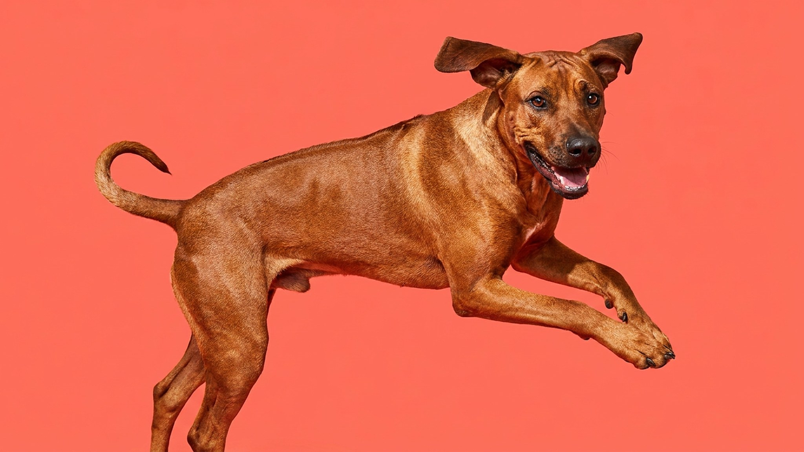

На спине у родезийского риджбека шерсть растёт в обратную сторону — это видно с первого взгляда и часто становится единственным, что люди знают о породе. За этой деталью скрывается одна из самых самостоятельных, физически мощных и преданных пород в мире. Родезийский риджбек — не для всех, но если вы готовы к его ритму жизни, он станет идеальным компаньоном.
🐾 Ваш питомец — родезийский риджбек?
Заведите профиль в AnimaLife: приложение запомнит породу, возраст и вес и будет подсказывать по уходу именно для неё. Вопросы AI-ветеринару — круглосуточно и бесплатно.
Завести профиль → Завести в MAX →
У вас iPhone? AnimaLife есть в App Store
Ridge — полоса шерсти вдоль позвоночника, где волоски растут в направлении, противоположном остальному покрову. Ширина гребня — 2–5 см, длина — от холки до крупа. По стандарту FCI на гребне должно быть два симметричных «завихрения» (корони) у основания.
Происхождение признака — смешение местных африканских собак с европейскими охотничьими породами в Южной Африке XVII–XIX веков. Функция ridge в природе спорна: возможно, это помогало выглядеть крупнее перед хищником. Сегодня это чисто породовой маркер. Отсутствие гребня дисквалифицирует собаку на выставке, но никак не влияет на характер и здоровье.
Родезийский риджбек изначально выводился для охоты на крупного зверя — в том числе для преследования льва (отсюда второе название «лев-хаунд»). Это определило психологию: собака самостоятельна в принятии решений, устойчива под давлением, не паникует и не теряется в нестандартных ситуациях.
Родезийский риджбек — атлет. Взрослой собаке нужно минимум 1,5–2 часа активного движения в день: бег, велосипед, эпроброс, плавание. Прогулка «по газону и обратно» не даст выхода энергии — и она найдёт другой выход, обычно через мебель или забор.
Риджбек умён, но не услужлив. Он оценивает команды с позиции «зачем мне это делать» — поэтому жёсткий, давящий стиль воспитания не работает и даже обостряет упрямство.
🐾 У вас родезийский риджбек?
AnimaLife соберёт уход под породу: к каким болезням есть склонность, что проверять по возрасту, чем кормить и когда пора к врачу. Бесплатно, прямо в мессенджере.
Собрать план ухода → Собрать в MAX →
У вас iPhone? AnimaLife есть в App Store
🐾 Понравился разбор?
Подпишитесь на канал — каждый день разбираем по одному тревожному симптому у кошек и собак: что в пределах нормы, а когда пора к врачу. Подпишитесь, чтобы не пропустить разбор, который может спасти здоровье вашего питомца.
Материал носит информационный характер и не заменяет очную консультацию ветеринара.